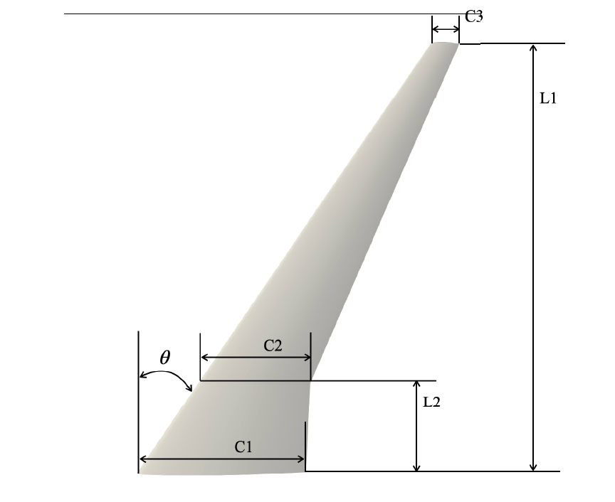

Ce projet a été réalisé sur une durée de 4 mois et demi dans le cadre d'un stage en recherche dans le laboratoire multi-physique de Professeur Abe dans l'université de TOHOKU au Japon.
L'aviation est un secteur fortement polluant, dont la réduction de l’impact environnemental est devenue une priorité. Les ingénieurs s'appuient de plus en plus sur les simulations numériques pour concevoir des avions plus performants et durables, mais ces simulations génèrent d'énormes volumes de données. Par ailleurs, les matériaux composites comme les CFRP, bien que prometteurs, restent complexes à modéliser et certifier. Face à ces défis, des approches basées sur les données, comme la réduction de dimension et l’identification de modes aérodynamiques, permettent de diminuer les coûts de calcul tout en conservant la précision.
Comment réduire l'ordre des modèles utilisés pour simuler les ailes composites tout en préservant la précision des résultats ?
Pour répondre à cette problématique, j'ai utilisé une approche en deux étapes :
This project was carried out over a period of four and a half months as part of a research internship at Professor Abe's multi-physics laboratory at Tohoku University in Japan.